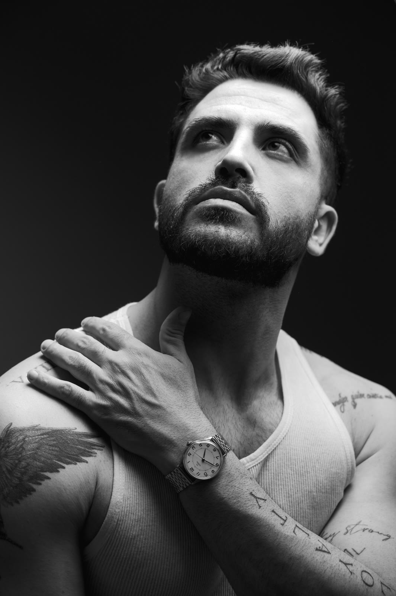
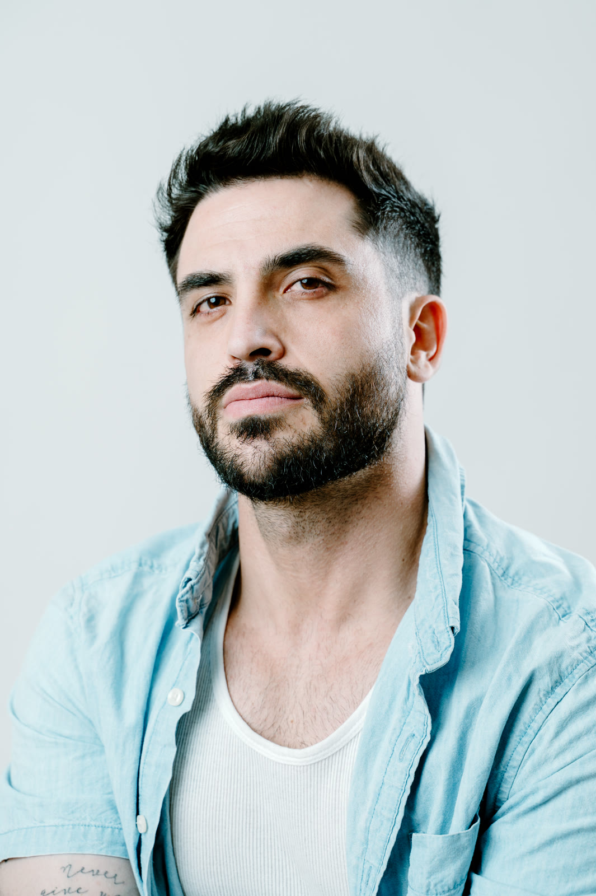
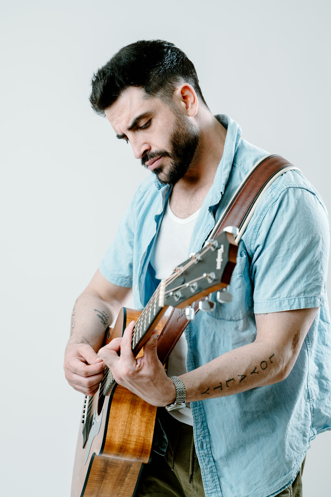

Canciones que nacen de momentos de entrega, de encuentros con Dios en lo profundo.

Eugenio Valdez es cantante y compositor de música cristiana. Su adoración no busca aplausos: busca un encuentro.
Cada tema surge de lo íntimo —de la entrega, del silencio, de esos momentos en que el alma se rinde y encuentra a Dios en lo profundo. Con una voz honesta y una estética sobria, Eugenio construye espacios para detenerse, respirar y volver a lo esencial.
Su deseo es simple y enorme a la vez: que quien lo escuche no solo oiga una melodía, sino que experimente Su presencia, Su paz y ese amor que transforma.
Sencillos de adoración disponibles en todas las plataformas. Reproduce directamente aquí o elige la tuya.

Eugenio Valdez es un cantante y compositor de música cristiana. Su música de adoración nace de momentos de entrega y de encuentros con Dios, con el deseo de que quien la escuche experimente Su presencia, Su paz y Su amor.
Música cristiana de adoración (worship) en español. Entre sus canciones están «Ovejas Mías», «Jesús es Mi Señor», «Yo Elijo a Dios», «Otra Vez» y «Hard Fought Hallelujah (Versión Español)».
Su más reciente sencillo es «Ovejas Mías» (2026), disponible en Spotify, Apple Music, Amazon Music y todas las plataformas de streaming.
En Spotify, Apple Music, Amazon Music y YouTube. También puedes seguirlo en Instagram, TikTok y Facebook como @eugenio.valdezz.
Nuevos sencillos, presentaciones y momentos de adoración. Acompáñame en el camino.
eugeniovf_07@hotmail.com